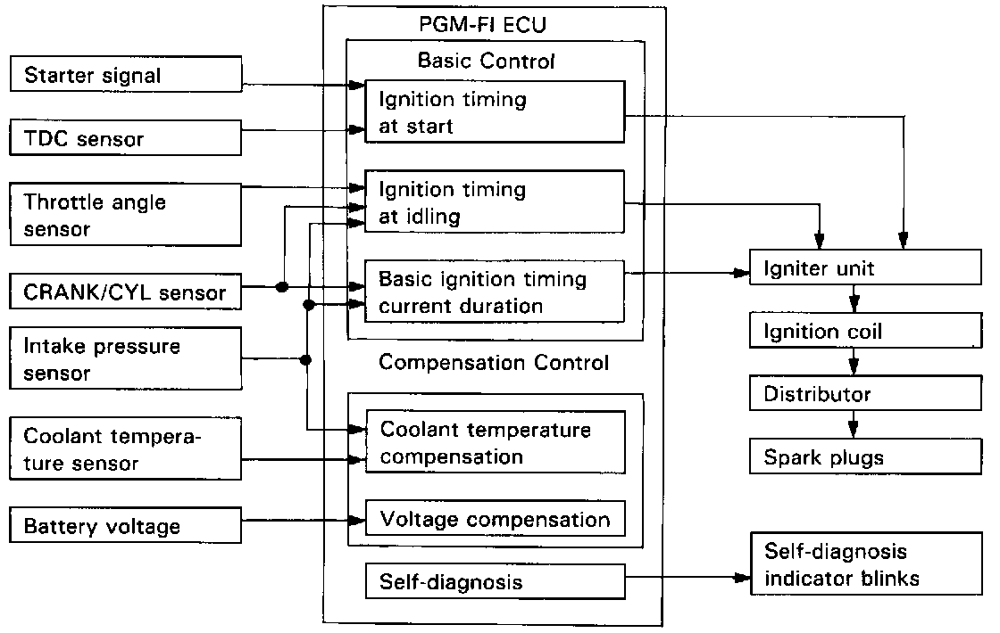
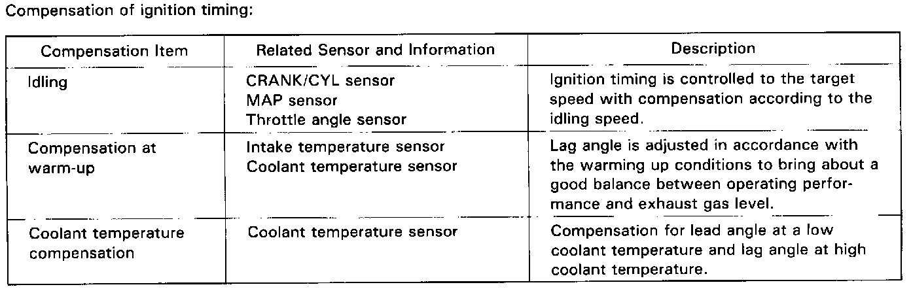

Ignition System: Description and Operation

Ignition Timing Control:
The programmed ignition (PGM-IG) employed in this engine provides optimum control of ignition timing by determining the optimum timing using a microcomputer in response to engine speed and vacuum pressure in the intake manifold, which are transmitted by signals from CRANK/CYL sensor, TDC sensor, throttle angle sensor, coolant temperature sensor and MAP sensor. This system, not dependent on a governor or vacuum diaphragm, is capable of setting lead angles with complicated characteristics which cannot be provided by conventional governors or diaphragms.
Basic Control
Determination of ignition timing/current duration:
The system has stored within it the optimum basic ignition timing for operating conditions based upon engine speed and intake manifold pressure in the control unit (microcomputer). With compensation by signals from sensors, the system determines optimum timing for ambient conditions and sends voltage pulses to the igniter unit.

Control at Start
Ignition timing is fixed at BTDC 10° for cranking. The cranking is detected by the TDC sensor (cranking revolution) and starter signal.